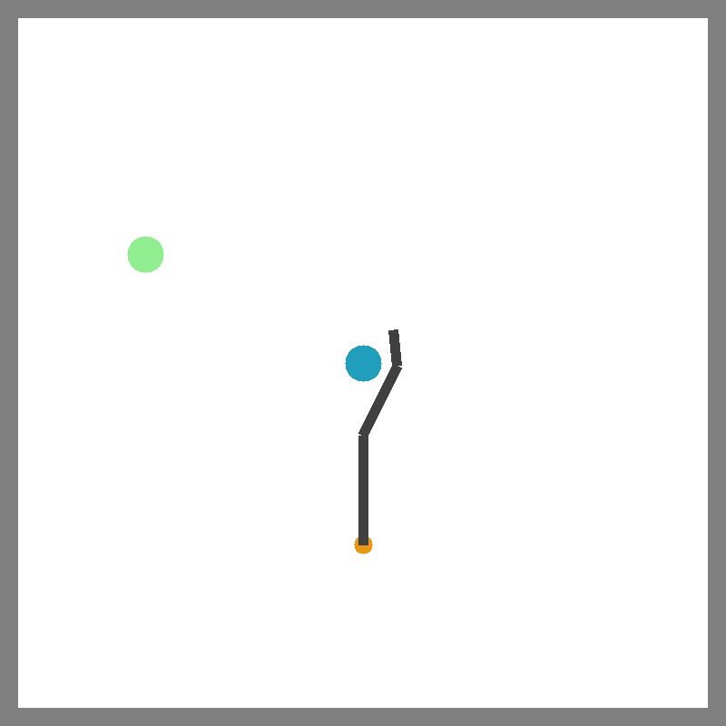
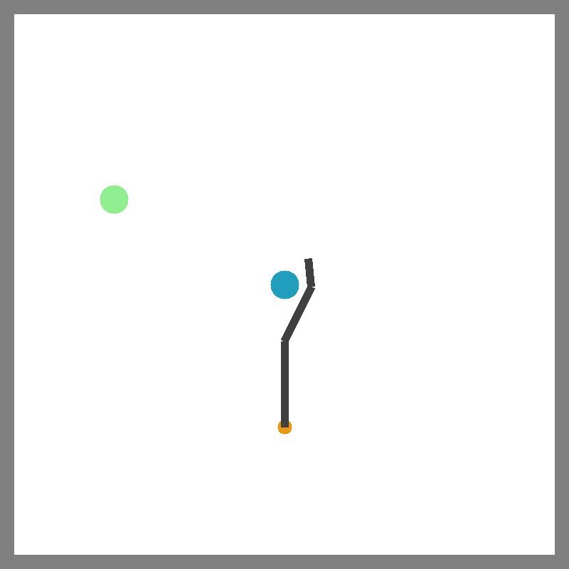

A robot may need to use different tools to fetch an out-of-reach book (blue) or push it into the bookshelf (pink). Therefore, it should rapidly prototype tools for the tasks at hand.
Abstract
When limited by their own morphologies, humans and some species of animals have the remarkable ability to use objects from the environment toward accomplishing otherwise impossible tasks. Robots might similarly unlock a range of additional capabilities through tool use. Recent techniques for jointly optimizing morphology and control via deep learning are effective at designing locomotion agents. But while outputting a single morphology makes sense for locomotion, manipulation involves a variety of strategies depending on the task goals at hand. A manipulation agent must be capable of rapidly prototyping specialized tools for different goals. Therefore, we propose learning a designer policy , rather than a single design. A designer policy is conditioned on task information and outputs a tool design that helps solve the task. A design-conditioned controller policy can then perform manipulation using these tools. In this work, we take a step towards this goal by introducing a reinforcement learning framework for jointly learning these policies. Through simulated manipulation tasks, we show that this framework is more sample efficient than prior methods in multi-goal or multi-variant settings, can perform zero-shot interpolation or fine-tuning to tackle previously unseen goals, and allows tradeoffs between the complexity of design and control policies under practical constraints. Finally, we deploy our learned policies onto a real robot.
Tool Design and Control Tasks
Push

Catch Balls

Scoop

Fetch Cube
Lift Cup


 
